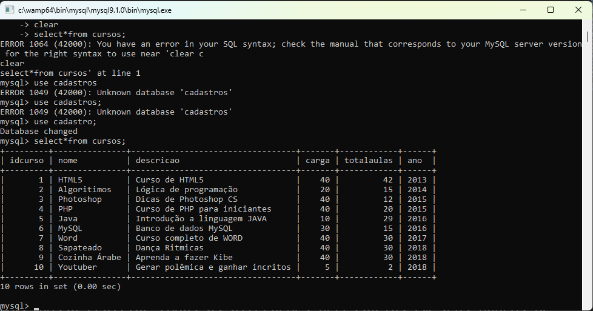
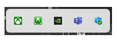
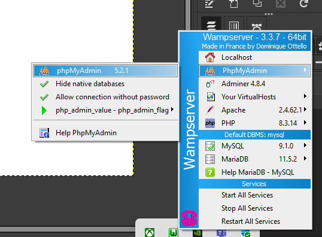
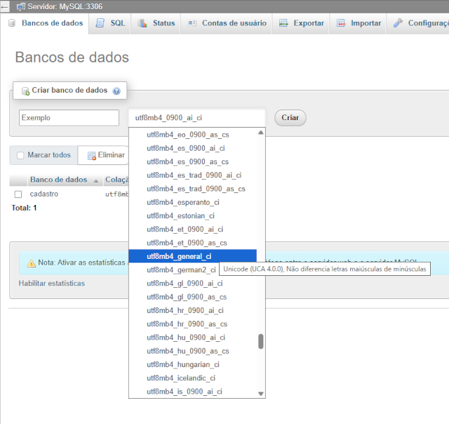
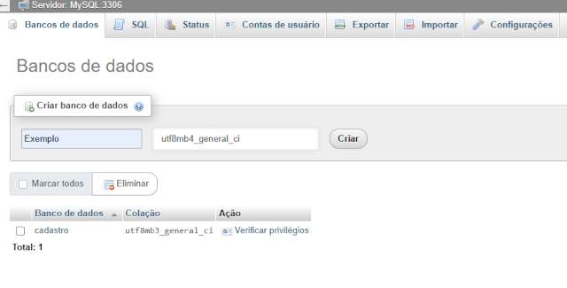
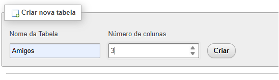
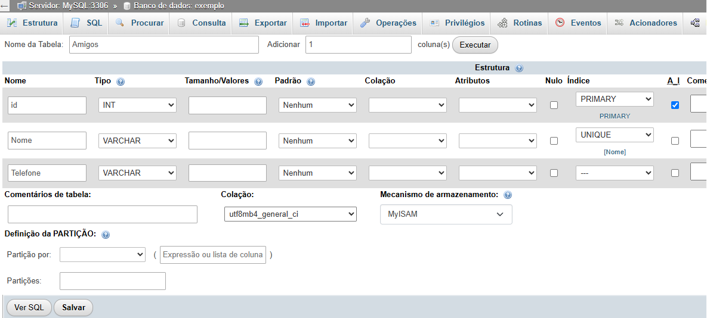
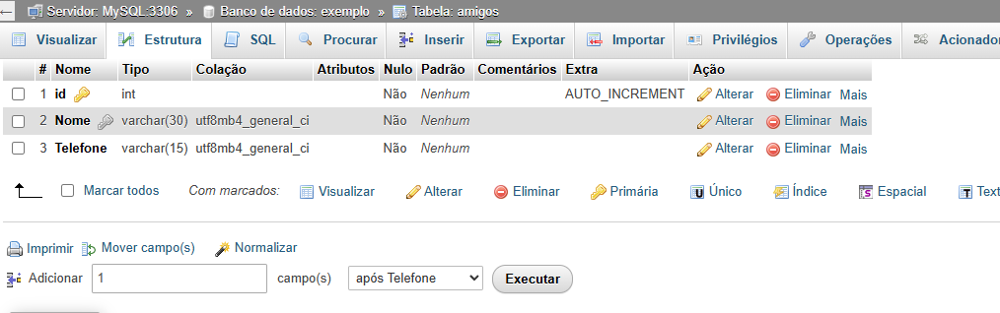
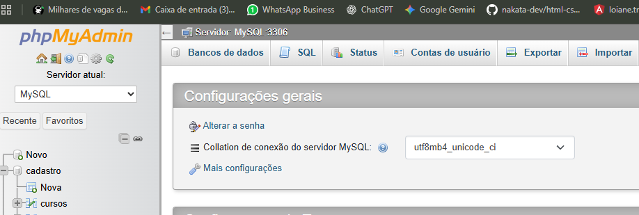

MySQL Console:

1º Abra o programa Wampserver64 e em seguida clique em seu icone e busque por MySQL > MySQL console
2º Ali você vai conseguir executar todos os comando que usou no MySQL Workbench
Dica: Busque práticar por todas as três formas de alterações de cadastros.
PHP MyAdmin - parte I

3º Click novamente no icône do Wampserver64 > PHPMyAdmin > PHPMyAdmin 5.2.1

4º Use login: root e deixe a senha em branco e o site admin vai abrir para que você possa realizar todas as alterações necessárias em teu banco de dados.
PHP MyAdmin - parte II
1º Abra os três programas para trabalhar o seu banco de dados:
- MySQL Workbench
- MySQL Console
- PHPMyAdmin
Em console digite:
show databases;
Criando um banco de dados direto pelo PHPMyAdmin
Abra o site PHPMyAdmin e crie um banco de dados novo com o nome de exemplo apra práticar.
selecione: utf8mb4_general_ci

Criando um novo Banco de Dados

Nome da Tabela e quantidade de Colunas

Criando os campos do Banco de Dados

Para alterar dados, use esses campos:

Exportando Banco de dados no PHPMyAdmin
Atenção: Ao exportar os dados, click primeiro no icone Home que fica do lado esquerdo superior no site. Depois você seleciona o exportar!
